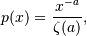
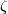
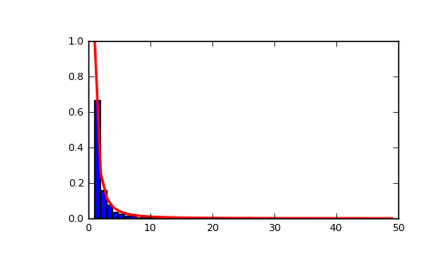

numpy.random.zipf¶
- numpy.random.zipf(a, size=None)¶
Draw samples from a Zipf distribution.
Samples are drawn from a Zipf distribution with specified parameter a > 1.
The Zipf distribution (also known as the zeta distribution) is a continuous probability distribution that satisfies Zipf’s law: the frequency of an item is inversely proportional to its rank in a frequency table.
Parameters : a : float > 1
Distribution parameter.
size : int or tuple of int, optional
Output shape. If the given shape is, e.g., (m, n, k), then m * n * k samples are drawn; a single integer is equivalent in its result to providing a mono-tuple, i.e., a 1-D array of length size is returned. The default is None, in which case a single scalar is returned.
Returns : samples : scalar or ndarray
The returned samples are greater than or equal to one.
See also
- scipy.stats.distributions.zipf
- probability density function, distribution, or cumulative density function, etc.
Notes
The probability density for the Zipf distribution is

where  is the Riemann Zeta function.
It is named for the American linguist George Kingsley Zipf, who noted that the frequency of any word in a sample of a language is inversely proportional to its rank in the frequency table.
References
Zipf, G. K., Selected Studies of the Principle of Relative Frequency in Language, Cambridge, MA: Harvard Univ. Press, 1932.
Examples
Draw samples from the distribution:
>>> a = 2. # parameter >>> s = np.random.zipf(a, 1000)
Display the histogram of the samples, along with the probability density function:
>>> import matplotlib.pyplot as plt >>> import scipy.special as sps Truncate s values at 50 so plot is interesting >>> count, bins, ignored = plt.hist(s[s<50], 50, normed=True) >>> x = np.arange(1., 50.) >>> y = x**(-a)/sps.zetac(a) >>> plt.plot(x, y/max(y), linewidth=2, color='r') >>> plt.show()
(Source code, png, pdf)

{kind=link}